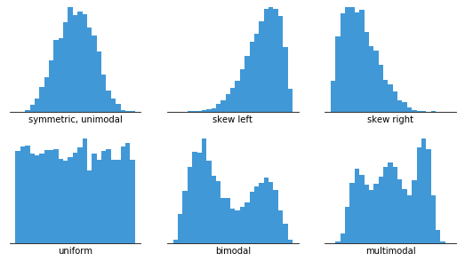

Estadística descriptiva
Contenido
25. Estadística descriptiva¶
La estadística descriptiva corresponde a los métodos numéricos y gráficos que nos permiten resumir, describir y visualizar nuestros datos
También se suele llamar análisis exploratorio de datos y es clave para
Obtener información básica y resumida de nuestras variables
Descubrir patrones en nuestros datos
Detectar la presencia de outliers (valores fuera de rango)
Seleccionar de manera informada los métodos inferenciales que utilizaremos
entre otros. El objetivo es describir nuestros datos para mejorar nuestro entendimiento de los mismos
En esta lección veremos algunas funciones de matplotlib, numpy y scipy.stats para realizar estadística descriptiva
%matplotlib inline
import numpy as np
import pandas as pd
import scipy.stats
import matplotlib.pyplot as plt
25.1. Histogramas¶
El histograma es una representación aproximada de la distribución de probabilidad de una variable
Asumiendo que tenemos un vector con realizaciones de una variable aleatoria
podemos construir un histograma en tres pasos
Establecer un rango mínimo y máximo
Dividir el rango en cajones/bines
Medir la frecuencia relativa en cada cajón, es decir la cantidad de \(x_i\) que caen en dicho cajón divido \(N\)
Ejemplo: Para construir el siguiente histograma se utilizaron \(7\) bines de tamaño \(1\) regularmente distribuidos en el rango \([-3, 4]\)

El ejemplo anterior corresponde al caso particular más común donde los cajones son disjuntos y de igual tamaño. En dicho caso los cajones se definen completamente con
el rango del histograma: Comienzo del primer bin y termino del último bin
la cantidad de bines: En conjunto con el rango especifican el tamaño de los bines
Histograma con Matplotlib
Consideremos el siguiente dataset con expectativa de vida, población y PIB per cápita por país al año 2007
df = pd.read_csv('data/gapminder.csv', index_col=2).loc[2007].set_index("country")
df.head()
| continent | lifeExp | pop | gdpPercap | |
|---|---|---|---|---|
| country | ||||
| Afghanistan | Asia | 43.828 | 31889923 | 974.580338 |
| Albania | Europe | 76.423 | 3600523 | 5937.029526 |
| Algeria | Africa | 72.301 | 33333216 | 6223.367465 |
| Angola | Africa | 42.731 | 12420476 | 4797.231267 |
| Argentina | Americas | 75.320 | 40301927 | 12779.379640 |
La función hist de matplotlib nos retorna el histograma y además lo gráfica. Sus principales argumentos “funcionales” son:
Un
ndarrayunidimensionalbins: La cantidad de cajonesrange: Una tupla con el límite mínimo y máximo del histogramadensity: Un booleano para especificar si se retorna la frecuencia relativa o absolutacumulative: Un booleano para especificar si se retorna la frecuencia acumulada
También tiene argumentos que modifican la apariencia del gráfico como color, orientation, align, entre otros
Por ejemplo:
fig, ax = plt.subplots(figsize=(6, 3), tight_layout=True)
counts, bin_edges, artist = ax.hist(df["lifeExp"], bins=5, edgecolor='black')
ax.set_xlabel('Expectativa de vida')
display(counts, bin_edges)
array([15., 20., 18., 38., 51.])
array([39.613, 48.211, 56.809, 65.407, 74.005, 82.603])

donde counts corresponde a los conteos (frecuencias) y bin_edges a los límites de los cajones. Notar que para cinco cajones tendremos seis límites
Influencia de la cantidad de bines
A continuación se muestra como cambia el histograma usando distinto número de cajas (bins)
fig, ax = plt.subplots(5, figsize=(6, 8), tight_layout=True, sharex=True)
for k, bins in enumerate([2, 5, 10, 20, 30]):
ax[k].hist(df["lifeExp"], bins=bins, edgecolor='black', label=f"{bins}")
ax[k].legend(loc=2)
ax[-1].set_xlabel('Expectativa de vida');

Importante
La cantidad de bines (en relación al rango) controla la resolución del histograma
Utilizar muy pocos bines resultará en pérdida de detalle (bines muy anchos)
Utilizar demasiados bines resultará en un histograma muy ruidoso (bines muy delgados)
En el ejemplo anterior utilizar dos bines nos da una estimación demasiado gruesa, mientras que usar 30 nos da una estimación demasiado ruidosa. El mejor compromiso parece estar entre 10 y 20
Consejo
Usa distintos valores de bins y evalua cualitativamente los resultados
Como valor inicial para bins se puede utilizar una heurística como la “regla de Silverman”, la cual nos da un estimado para el ancho de los bines
donde \(N\) es la cantidad de datos y \(\sigma\) es la desviación estándar de los datos. Si dividimos el rango por el ancho de los bines y luego redondeamos obtenemos
silverman_rule = lambda data: 0.9*np.std(data)*len(data)**(-1/5)
rango = lambda data: np.amax(data) - np.amin(data)
int(np.round(rango(df["lifeExp"])/silverman_rule(df["lifeExp"])))
11
Interpretación de un histograma
El histograma revela visualmente algunas propiedades y comportamientos de la distribución de nuestra muestra. Usando un histograma podemos reconocer nuestros datos en alguna de las distribuciones que vimos en la lección anterior
Considere ahora los siguientes ejemplos de histogramas de distribuciones univariadas
Utilizando el histograma podemos estudiar
Peso relativo entre la cola izquierda y derecha: Simetría de la distribución
La cantidad de modas de una distribución: Puede ser una (normal), múltiples o ninguna en particular (uniforme)
Histograma en dos dimensiones
La noción de histograma se puede extender al caso de dos variables utilizando cajones (bines) bidimensionales
La función hist2d de matplotlib construye un histograma en dos dimensiones y lo grafica como un mapa de contornos
A continuación se muestra un histograma de la expectativa de vida (horizontal) y el PIB per cápita (vertical)
fig, ax = plt.subplots(figsize=(6, 4), tight_layout=True)
res = ax.hist2d(df["lifeExp"], df["gdpPercap"], bins=15, edgecolor='black', cmap=plt.cm.Blues)
counts, bin_edges_x, bin_edges_y, artist = res
ax.set_xlabel('Expectativa de vida')
ax.set_ylabel('PIB per capita')
fig.colorbar(artist);

donde counts corresponde a los conteos (frecuencias) y bin_edges_x/bin_edges_y corresponde a los límites horizontales y verticales, respectivamente
Nota
Con el histograma en dos dimensiones exploramos la distribución conjunta de las variables. Esto nos permite revelar correlaciones entre las variables
25.2. Distribución acumulada empírica¶
Para calcular probabilidades a partir de neustros datos necesitamos su distribución. En general no conocemos la función de masa/densidad subyacente de los datos, pero podemos calcular su distribución empírica
Si tengo \(n\) datos \(X_1, X_2, \ldots, X_n\), su distribución acumulada empírica es
Donde la función indicadora \(\mathbb{1}(X_i<x)\) es igual a \(1\) si la \(X_i<x\) o \(0\) en el caso contrario
Si los datos están ordenados entonces sólo tenemos que buscar en que posición se encuentra \(x\) y dividir por \(n\)
Podemos implementarla en NumPy como
def ECDF(data):
data = np.sort(data)
n = len(data)
def result(x):
return np.searchsorted(data, x, side='right')/n
return result
Ejemplo
¿Cuál es la probabilidad de seleccionar al azar un país que tenga expectativa de vida menor a 80 años?
ECDF(df["lifeExp"])(80)
0.9084507042253521
¿Cuál es la probabilidad de seleccionar al azar país que tenga expectativa de vida mayor a 60 años?
1. - ECDF(df["lifeExp"])(60)
0.6971830985915493
¿Cuál es la probabilidad de seleccionar al azar país que tenga expectativa de vida entre 60 y 80 años?
ECDF(df["lifeExp"])(80) - ECDF(df["lifeExp"])(60)
0.6056338028169015
25.3. Descriptores de la distribución¶
Visualizar la distribución nos da mucha información. Pero en algunos casos sólo interesa comprobar la existencia de ciertas características o atributos de la distribución
Podemos resumir una distribución en función de sus momentos
Cada momento describe una propiedad en particular
Primer momento o media: Describe donde está localizada la distribución
Segundo momento o varianza: Describe el ancho o dispersión de la distribución
Tercer momento o simetría (skewness): Indica si la distribución es más pesada hacia la izquierda o hacia la derecha
Cuarto momento o curtosis (kurtosis): Indica si la distribución es picuda o plana
La siguiente figura esquematiza las influencia de los momentos

También podemos describir una distribución en función de la
Moda: Valor más repetido
Mediana: Valor central
Diferencias entre percentiles
Calculando descriptores con pandas y scipy
Los dataframe tienen un método llamado describe que retorna la media, la desviación estándar y los percentiles de los atributos
df.describe()
| lifeExp | pop | gdpPercap | |
|---|---|---|---|
| count | 142.000000 | 1.420000e+02 | 142.000000 |
| mean | 67.007423 | 4.402122e+07 | 11680.071820 |
| std | 12.073021 | 1.476214e+08 | 12859.937337 |
| min | 39.613000 | 1.995790e+05 | 277.551859 |
| 25% | 57.160250 | 4.508034e+06 | 1624.842248 |
| 50% | 71.935500 | 1.051753e+07 | 6124.371108 |
| 75% | 76.413250 | 3.121004e+07 | 18008.835640 |
| max | 82.603000 | 1.318683e+09 | 49357.190170 |
También podemos utilizar la función describe de scipy.stats
res = scipy.stats.describe(df[["lifeExp", "gdpPercap"]])
El objeto retornado tiene atributos
nobs: Número de observacionesminmax: Tuplas con valor mínimo y máximomean: Primer momentovariance: Segundo momentoskewness: Tercer momentokurtosis: Cuarto momento
Por ejemplo la simetría de las variables consultadas:
res.skewness
array([-0.6814798 , 1.21122788])
Finalmente, si necesitamos un momento en particular, podemos utilizar moment de scipy.stats
scipy.stats.moment(df["lifeExp"], moment=5)
-739409.7609087641